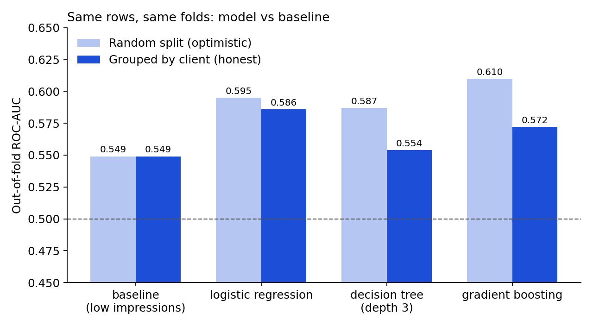
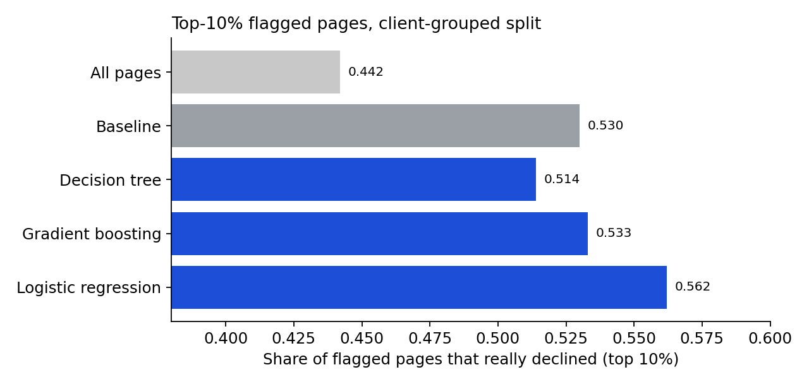
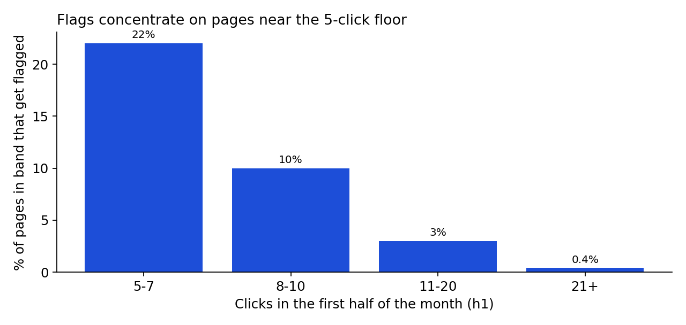

Flagging Pages Likely to Lose Clicks: A Small, Honestly Validated Triage Model
Abstract
Can early-month search data tell us which pages are likely to lose clicks in the second half of the month, so content refresh effort can start in the right place? I used the March 2026 slice of the FlyRank internship dataset, built five features from days 1–15, and defined “decline” as clicks in days 16–31 falling below 80% of clicks in days 1–15. I compared a simple baseline (rank pages by lowest early impressions) against logistic regression, a shallow decision tree and shallow gradient boosting, all scored on the same client-grouped 5-fold split. Logistic regression reached an out-of-fold ROC-AUC of 0.586 against 0.549 for the baseline, and was ahead in 5 of 5 folds, but the gain is about the size of the fold-to-fold spread and every model stays below 0.6. I read this as a small, directional improvement, useful as decision-support for where to look first, and not as a reliable predictor.
1. Introduction / Problem statement
Content teams cannot refresh every page at once. A useful first step is a short list of pages that look most at risk of losing traffic, so the first reviews go to the right place. This paper asks one narrow question: using only what we know by mid-month, can we rank pages so that the top of the list contains more true decliners than chance?
The prediction target is binary: a page “declines” if its clicks in the second half of the month are below 80% of its clicks in the first half. The model never sees second-half data. The goal is triage, not causal claims about refreshing.
2. Data
| Item | Value |
|---|---|
| Release | FlyRank ML Internship dataset (gated warehouse release on Hugging Face, read access by request) |
| Table used | fact_content_daily_performance, partition month=2026-03, only rows where search data was available |
| Date windows | Features: 1–15 March 2026 (h1). Label: 16–31 March 2026 (h2) |
| Unit of analysis | One page (content item) within one client, aggregated over each half-month |
| March 2026 size | 9,841,378 daily rows, 55 clients, 331,437 content items. Only 3,611,061 rows (about 36.7%) have Search Console data available (IS TRUE), so that is the slice used. Grain check: no duplicate (date, client, content) keys. |
| Rows after filtering | 17,431 pages across 29 clients (anonymised hash IDs only) |
| Excluded & why | Pages with fewer than 5 clicks in h1 (the decline ratio is too noisy for tiny counts); pages missing any feature value. Only 1 row had no h2 data at all. |
| Base rate | 44.2% of retained pages are labelled “declined” |
The course material describes the full dataset as about 79 million rows of real production search data; this paper uses only the single table and month above. Client and page identifiers are hashed in the source, and none appear here. No client names, URLs or search queries are used.
3. Methodology
- Assumptions: the first half of the month is a fair snapshot of what is known at prediction time; the 80% threshold is a reasonable definition of a meaningful decline; pages are comparable enough to share one model.
- Features (five, all from days 1–15): impressions, clicks, click-through rate, average position, and number of active days (days with impressions above zero).
- Label: decline = clicks in days 16–31 < 0.8 × clicks in days 1–15. Pages with no h2 clicks count as declined (this affected 1 row).
- Baseline: rank pages by lowest h1 impressions (fewer impressions = higher risk). It needs no training.
- Models: logistic regression on log-scaled features; decision tree (depth 3); histogram gradient boosting (depth 3, regularised). Simplest first, and a model counts as better only if it beats the baseline on the same split by more than fold-to-fold noise.
- Validation design: 5-fold split grouped by client, so all pages of one client are either in training or in testing. A random split is shown next to it only as a comparison. Every method is scored on the same out-of-fold rows.
- Metrics: ROC-AUC, PR-AUC (against the 0.442 base rate) and the decline rate among the top-10% flagged pages.
- Leakage checks: (1) every feature is built only from days 1–15 and the code asserts the label and h2 columns are not features; (2) univariate AUC per feature, the highest being 0.549; (3) a shuffled-label test gave ROC-AUC 0.498, close to the 0.5 expected without leakage; (4) dropping the two click-based features that also appear in the label formula left grouped ROC-AUC unchanged (0.586 vs 0.586).
4. Results
| Method (grouped split) | ROC-AUC | Top-10% decline rate | Folds beating baseline |
|---|---|---|---|
| Baseline (low impressions) | 0.549 | 0.530 | — |
| Logistic regression | 0.586 | 0.562 | 5 of 5 |
| Gradient boosting | 0.572 | 0.564 | 4 of 5 |
| Decision tree (depth 3) | 0.554 | 0.514 | 3 of 5 |
All pages together decline at 0.442, so that is the “dumb guess” for the top-10% column. Logistic regression’s PR-AUC was 0.513 against 0.484 for the baseline. Its mean per-fold ROC-AUC gain over the baseline is +0.031, with fold standard deviations of roughly 0.03.


Interpretation. Under the grouped split, logistic regression is the only model ahead of the baseline in every fold. Its advantage is positive but about the size of the fold noise, so I read it as small and directional. Logistic regression and gradient boosting (0.586 vs 0.572) are within that spread, and on the top-10% decline rate they are essentially tied (0.562 vs 0.564), so this evidence cannot separate them; I prefer logistic regression because its coefficients are readable. The random split was optimistic for every model (logistic regression 0.595 → 0.586, tree 0.587 → 0.554, gradient boosting 0.610 → 0.572). This is consistent with flexible models picking up client-specific patterns, but I did not test that explanation.
What the model leans on (one fold only). In fold 0, permutation importance was highest for active days and impressions. In the logistic regression, more active days pointed toward decline and more impressions pointed away from it. This is a pattern in this month, not a cause.
Where the model is wrong
- About 44% of flagged pages did not decline, and many true decliners are missed.
- Only about 54% of its flagged pages overlap with the baseline’s flagged pages, so it picks different pages, not just the same ones.
- About 73% of flagged pages have only 5–7 h1 clicks, where one or two clicks can flip the label (Figure 3).
- 58% of flagged rows come from the top three clients (26 of 29 clients have at least one flagged row), so results lean on a few clients.

5. Limitations & honest framing
- One month, one split inside it. Features come from 1–15 March and the label from 16–31 March. This is not a test on a different month, so I cannot say the result holds in other periods.
- Weak absolute performance. Every model has ROC-AUC under 0.6. The score is decision-support for where to look first, not a reliable predictor.
- Prediction, not cause. Nothing here shows that refreshing a page changes its clicks.
- Noisy label near the floor. Pages with 5–7 clicks dominate the flags. One possible explanation, not tested here, is that pages near the click floor tend to fall back.
- Client concentration. A few clients make up a large share of the data and the flags.
- Missing information. Features cannot see content age, seasonality or ranking changes.
- Audit limits. The leakage checks find what I thought to look for; they do not prove nothing leaks. Gradient boosting scores moved between my three runs (ROC-AUC 0.567 to 0.577 under the grouped split), so I do not treat its exact value as stable; this paper uses the figures from the final capstone notebook run.
6. Ranked recommendations (action playbook)
- Use the logistic regression score only as a triage list. Reviewing the top 10% gave a 56% decline rate versus 44% for all pages. That is a modest edge, so treat flagged pages as “look first”, not “will decline”. Confidence: moderate, one month.
- Do not act on flags from 5–7-click pages alone. They make up most flags and have the noisiest label; require a human look, or raise the click floor. Confidence: moderate.
- Re-test on a different month before relying on it. This is the biggest open question, and the cheapest next step. Confidence this matters: high.
- Always validate grouped by client. Random splits overstated every model here. Confidence: high for this data.
- Try features the model cannot see today (content age, last refresh date, seasonality) before trying more complex models, since gradient boosting added nothing over logistic regression. Untested idea.
7. Reproducibility
Repo: github.com/Hammad-vibes/FlyRank-Internship
work/notebooks/w05_model.ipynb: method choice, grouped split, models vs baseline, error analysiswork/notebooks/w06_validation_audit.ipynb: random vs grouped comparison, leakage audit, failure examples, claim rewritework/notebooks/capstone.ipynb: the paper’s skeleton and artifacts
The notebooks load the data from the public warehouse with a Hugging Face token stored as a Colab secret named HF_TOKEN. Random seeds are fixed (42). capstone.ipynb regenerates every number and chart in this paper and writes a small metrics file as its receipt.
8. Acknowledgments & data credit
Built on the FlyRank ML Internship dataset — https://flyrank.ai. Thanks to the FlyRank internship team for the data and the research paper that framed the questions.